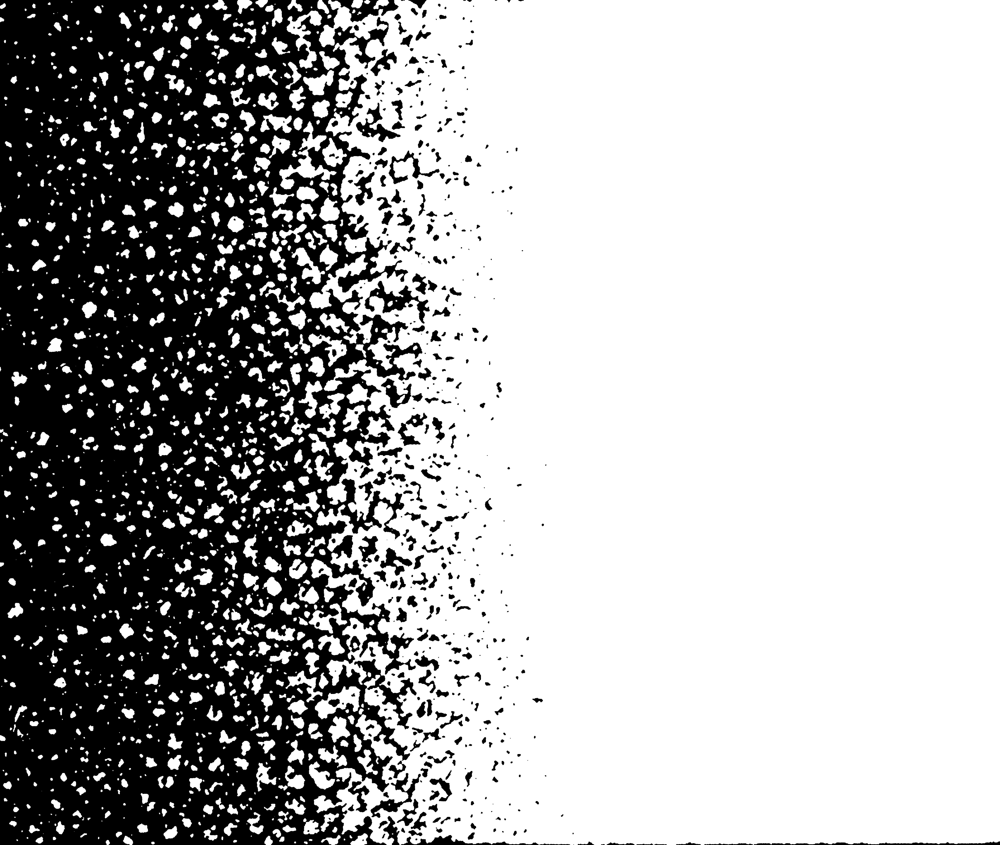
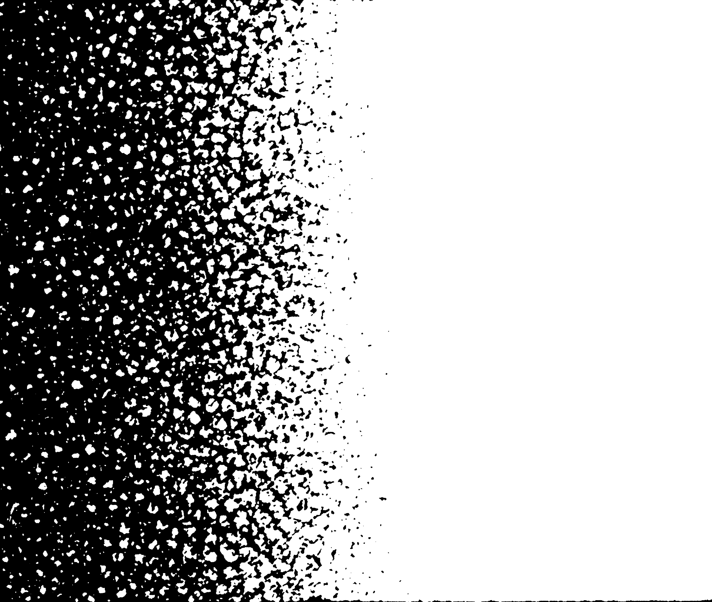

Première tentative d’échange artistique entre humains et non-humains, ce projet est conçu pour un public majoritairement extraterrestre.
Déployant une inventivité perverse et musicale, explorant l’aspect relatif de la normalité et de l’obscénité, Fusée questionne en dernier ressort les limites de l’utilité et de la représentation.
→ Ne serait-ce pas leur rendre la monnaie de leur pièce que de les torturer à leur tour ?


Après les succès de J’ai gravé le nom de ma grenouille dans ton foie et de DTC (on est bien), la jeune compagnie Clinic Orgasm Society s’est lancée dans un triptyque : Pré-Blé-Fusée, 3 spectacles indépendants et déjantés qui déplacent les limites de la normalité et qui se jouent de nos répulsions-fascinations.
Aussi, après Pré au Varia, Blé au Manège.Mons, voici Fusée à la Balsa, vers l’insoutenable
et au-delà !
- Conception
- Ludovic Barth et Claire Deville
- Mise en Scène
- Ludovic Barth
- Collaboration artistique
- Mathylde Demarez
- Musique
- Rodolphe Coster
- Lumière
- Marc Lhommel
- Son
- Benjamin Dandoy
- Interprétation
- Rodolphe Coster, Gregory Duret, Eno Krojanker, Anne-Fleur Inizan
Une production de la Clinic Orgasm Society en coproduction avec la Balsamine, le Théâtre Varia, le manège.mons/Centres Dramatiques de la Fédération Wallonie-Bruxelles, le PBA + Eden (Charleroi), Le Grand Bleu – ENPDA Lille Nord/Pas-de-Calais. Avec le soutien du Centre des Arts Scéniques (CAS) et de la SACD. Avec l’aide du Conseil de l’aide aux projets théâtraux (CAPT).
Pré et Blé seront à nouveau visibles au Théâtre Varia en février et mars 2014. Chacun peut être vu séparément des autres, mais vous pouvez aussi opter pour la formule des trois réunis (PASS Balsa-Varia) : « Fusée-Pré-Blé », en partenariat avec le Théâtre Varia.
 
